LAPORAN ANALISIS KOMPARATIF
ALFAGIFT VS KLIK INDOMARET
Analisis Pengalaman Pengguna Ritel dan Kinerja Layanan Digital Berbasis Ulasan Google Play Store (Rentang Data 15 Juni 2023 – 14 Juni 2026)
Metodologi & KPI Utama Retail Experience
Disclaimer Metodologi
Laporan komparatif ini disusun menggunakan data ulasan pengguna aplikasi Alfagift dan Klik Indomaret yang dipublikasikan di Google Play Store selama periode tiga tahun. Klasifikasi kategori ulasan dan analisis sentimen dilakukan secara otomatis menggunakan pemodelan bahasa alami (NLP) berbasis algoritma BERTopic yang dikombinasikan dengan IndoBERT Embeddings dan pencocokan Cosine Centroid untuk memastikan pengelompokan topik yang akurat.
Hasil analisis otomatis berbasis AI bersifat indikatif dan tidak menggantikan verifikasi atau penilaian profesional masing-masing pihak.
Tujuan Laporan
Laporan ini bertujuan untuk memetakan secara objektif perbandingan pengalaman pengguna (retail experience) dan kinerja pelayanan digital (digital service response) dari kedua platform ritel modern tersebut. Fokus analisis diarahkan pada identifikasi pola ulasan positif, kategori keluhan negatif utama, serta respon dari masing-masing unit layanan pelanggan dalam menanggapi keluhan pengguna di Google Play Store.
Tabel KPI Retail Experience (2023–2026)
| Parameter Pengalaman Pengguna | Aplikasi Alfagift | Aplikasi Klik Indomaret |
|---|---|---|
| Total Volume Ulasan | 93.649 ulasan | 39.993 ulasan |
| Rata-rata Rating (Weighted) | 4,37 dari 5,00 | 3,37 dari 5,00 |
| Proporsi Ulasan Positif | 77.713 ulasan (82,98%) | 22.757 ulasan (56,90%) |
| Proporsi Ulasan Netral | 2.092 ulasan (2,23%) | 1.506 ulasan (3,77%) |
| Proporsi Ulasan Negatif | 13.844 ulasan (14,78%) | 15.730 ulasan (39,33%) |
Analisis Rating & Sentimen Umum
Berdasarkan data akumulasi ulasan selama periode 2023–2026, Alfagift mencatat volume ulasan yang lebih tinggi dengan indeks kepuasan pengguna yang tecermin dari rata-rata rating 4,37 serta dominasi sentimen positif mencapai 82,98%. Sebaliknya, Klik Indomaret mencatat total ulasan sebanyak 39.993 dengan rata-rata rating berada pada angka 3,37. Selisih kepuasan tersebut dipengaruhi oleh proporsi sentimen negatif pada Klik Indomaret yang mencatat angka 39,33%, lebih tinggi dibandingkan proporsi sentimen negatif Alfagift yang berada pada angka 14,78%.
1. Retail experience: tren sentimen & rating
Grafik di bawah menggambarkan perbandingan tren sentimen tahunan serta pergerakan rata-rata rating dari aplikasi Alfagift dan Klik Indomaret selama periode analisis 2023–2026. Data ini memperlihatkan fluktuasi kepuasan pengguna dari waktu ke waktu yang dipengaruhi oleh stabilitas sistem aplikasi dan dinamika operasional masing-masing platform.
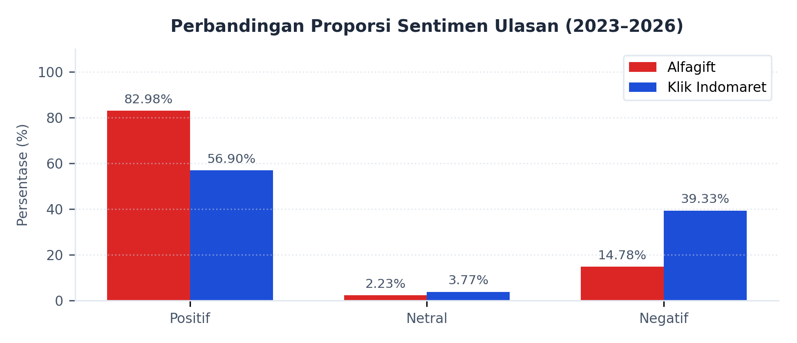
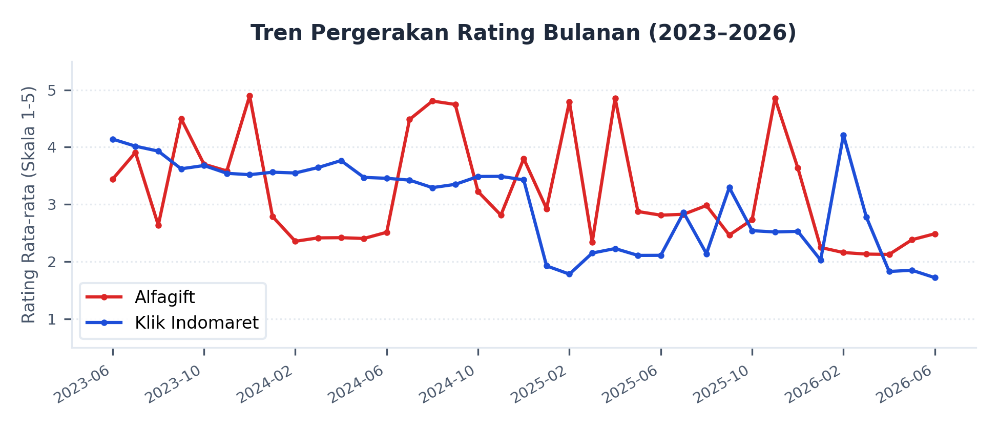
1. Retail experience: masalah utama (negatif) vs kekuatan utama (positif)
Analisis ulasan negatif menunjukkan perbedaan karakteristik masalah utama antara kedua aplikasi. Klik Indomaret didominasi oleh kendala teknis sistem internal, sedangkan Alfagift lebih banyak dikeluhkan terkait layanan fisik pengiriman.
Kategori Keluhan Terbanyak (Negatif)
- Alfagift: Didominasi kendala operasional pada Layanan Pengiriman (5.645 ulasan) dan Manajemen Akun (2.489 ulasan). Kategori dengan rating terendah adalah Kualitas Aplikasi (1,07) serta Program Promosi & Cashback (1,07).
- Klik Indomaret: Didominasi masalah teknis pada Performa Aplikasi (6.565 ulasan) dan Layanan Pengiriman (4.252 ulasan). Kategori dengan rating terendah adalah Pengalaman Pengguna/UI-UX (1,01) dan Kepuasan Pelanggan umum (1,03).
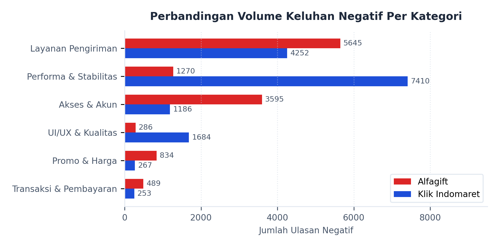
Pilar Utama Ulasan Positif
- Alfagift: Kategori Kepuasan Pengguna (28.416 ulasan) dan Pengalaman Pengguna belanja online (21.085 ulasan) mendominasi secara signifikan. Layanan Pengiriman & Promo menyumbang 16.299 ulasan positif dengan rating rata-rata 4,99.
- Klik Indomaret: Didominasi oleh Kepuasan Pengguna (7.581 ulasan) dan Pengalaman Pengguna (6.984 ulasan). Mencatat apresiasi pada Promosi & Penawaran (2.313 ulasan; rating 4,98) serta Layanan Pengiriman (1.309 ulasan; rating 4,97).
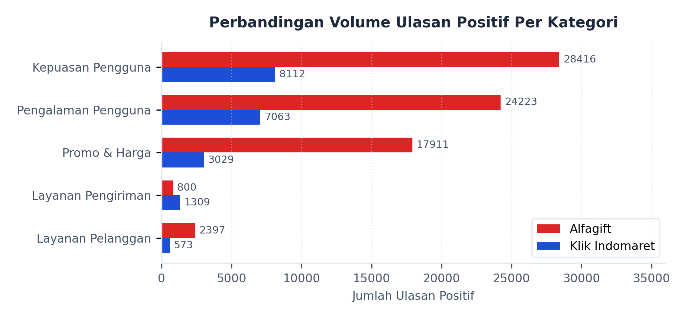
1. Retail experience: promo, harga & value
Respon pengguna terhadap program promosi dan kebijakan harga memperlihatkan kontras yang signifikan antara kedua platform ritel.
Evaluasi Promo & Harga Alfagift
- Sentimen Positif: Sangat tinggi pada Layanan Pengiriman & Promo (16.299 ulasan) serta Harga & Promosi (1.456 ulasan; rating 5,00), didorong oleh gratis ongkir tanpa syarat ketat dan diskon langsung.
- Sentimen Negatif: Tercatat keluhan minor terkait voucher atau poin tidak berfungsi pada kategori Promosi & Loyalitas (644 ulasan).
Evaluasi Promo & Harga Klik Indomaret
- Sentimen Positif: Terkonsentrasi pada Promosi & Penawaran (2.313 ulasan) dan Promosi & Diskon (521 ulasan).
- Sentimen Negatif: Keluhan menonjol pada Promosi & Harga (267 ulasan; rating 1,13) akibat ketidaksesuaian harga katalog vs toko fisik, serta tidak munculnya fitur tebus murah setelah update.
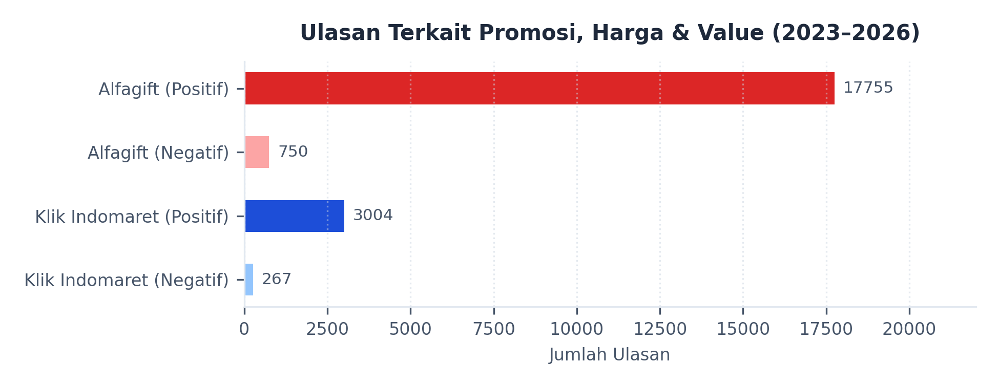
1. Retail experience: stok, fulfillment & loyalty
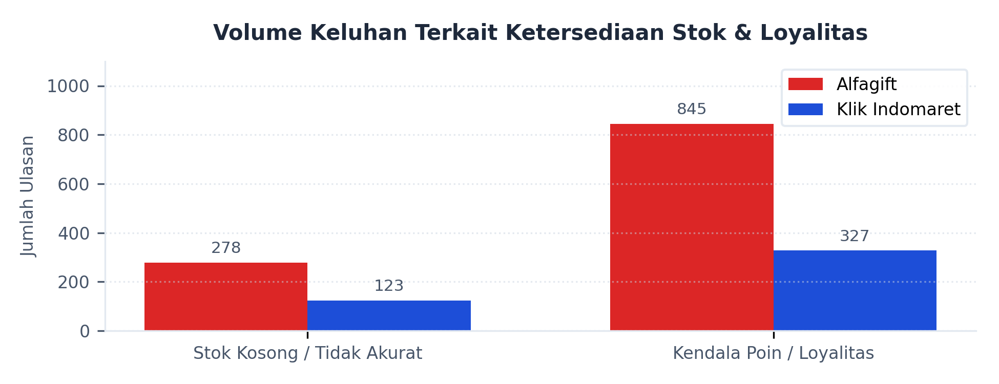
Pemenuhan pesanan dan program loyalitas pelanggan menjadi indikator penting dalam menjaga retensi pengguna di kedua aplikasi.
Manajemen Stok & Ketersediaan Produk
- Alfagift: Keluhan Ketersediaan Produk (278 ulasan negatif; rating 1,16) berfokus pada stok kosong item promo tebus murah dan persediaan air galon.
- Klik Indomaret: Keluhan Manajemen Stok (123 ulasan negatif; rating 1,20) berpusat pada ketidaksesuaian stok aplikasi vs gerai fisik, yang memicu pembatalan pesanan sepihak oleh sistem tanpa konfirmasi.
Program Loyalitas & Poin Reward
- Alfagift: Keluhan poin error/gagal tukar voucher tercatat di kategori Promosi & Loyalitas (644 ulasan) dan Program Loyalitas (201 ulasan; rating 1,14). Namun, ulasan positif loyalitas merek (Brand Loyalty) terkumpul 84 ulasan dengan rating 5,00.
- Klik Indomaret: Tidak memiliki kategori loyalitas khusus; keluhan poin hilang menyatu dalam isu umum operasional pasca update aplikasi.
1. Retail experience: pengiriman & omnichannel
Layanan logistik pengiriman dan integrasi online-to-offline (omnichannel) merupakan titik temu vital bagi kepuasan pelanggan e-grocery.
Performa Layanan Pengiriman (Logistik)
- Alfagift: Kategori Layanan Pengiriman mengumpulkan 5.645 ulasan negatif (rating 1,16) akibat keterlambatan dan status pelacakan tidak akurat. Namun, terdapat 632 ulasan positif (rating 4,99) yang mengapresiasi keandalan kurir.
- Klik Indomaret: Layanan Pengiriman mencatat 4.252 ulasan negatif (rating 1,11) karena keterlambatan pengiriman, diimbangi 1.309 ulasan positif (rating 4,97) yang memuji keramahan kurir gerai.
Tantangan Integrasi Omnichannel
- Disparitas Harga: Isu ketidaksesuaian harga antara katalog aplikasi dan toko fisik dikeluhkan pengguna Klik Indomaret (267 ulasan) serta Alfagift (106 ulasan).
- Cakupan Layanan & Staf: Alfagift mencatat 160 keluhan terkait area pengiriman terbatas. Klik Indomaret menerima 21 ulasan negatif terkait perilaku staf toko atau kurir.
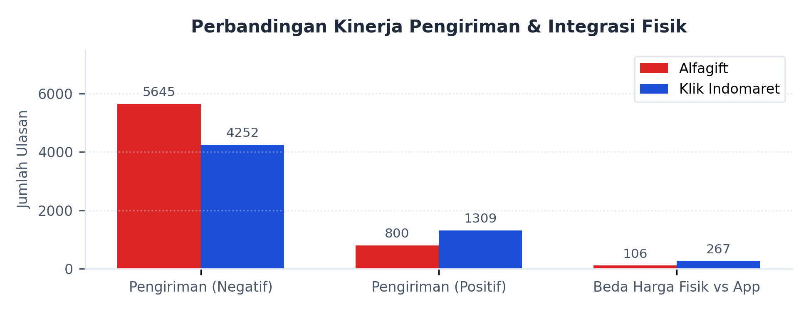
2. Digital service & response: KPI
Tabel di bawah memaparkan parameter kinerja layanan digital, termasuk statistik penanganan keluhan negatif di Google Play Store oleh tim Customer Service (CS) dari masing-masing platform.
| Parameter Layanan Digital | Aplikasi Alfagift | Aplikasi Klik Indomaret |
|---|---|---|
| Volume Ulasan Negatif Teranalisis | 13.844 ulasan | 15.730 ulasan |
| Rasio Balasan Admin CS | 10.111 ulasan (73,04%) | 6.798 ulasan (43,22%) |
| Median Waktu Tunda Tanggapan | 10,93 jam | 0,33 jam (20 menit) |
| Rasio Pengalihan Kanal Eksternal | 45,17% dari total balasan | 95,03% dari total balasan |
| Isu Teknis Utama Pengguna | Performa Aplikasi (1.016 ulasan) Aksesibilitas Aplikasi (709 ulasan) |
Performa Aplikasi (6.565 ulasan) Kualitas Aplikasi (787 ulasan) |
Kategori Kendala Teknis Utama
- Alfagift: Berpusat pada Performa Aplikasi (1.016 ulasan negatif; rating 1,13) dan Aksesibilitas Aplikasi (709 ulasan negatif; rating 1,18) akibat respon lambat dan kegagalan memuat katalog.
- Klik Indomaret: Mengalami kendala performa lebih masif pada Performa Aplikasi (6.565 ulasan negatif; rating 1,12) dan Kualitas Aplikasi (787 ulasan negatif; rating 1,06) berupa lag berat dan kegagalan sistem pembayaran.
Isu Keamanan & Akses Aplikasi (Alfagift)
Berdasarkan kumpulan ulasan pengguna, pembaruan keamanan Alfagift dinilai semakin sensitif dalam mendeteksi kondisi perangkat dan memunculkan pesan kesalahan Error 70007 pada sebagian pengguna. Keluhan yang muncul menyebut bahwa perangkat dianggap ter-root atau tidak aman meskipun pengguna merasa tidak pernah melakukan root, dan beberapa di antaranya mengaitkan kejadian ini dengan penggunaan VPN, pengaktifan USB debugging, atau aplikasi utilitas tertentu. Akibat pesan kesalahan tersebut, aplikasi tidak dapat digunakan sebagaimana mestinya pada perangkat yang terdampak, sehingga pengguna kehilangan akses ke layanan Alfagift meskipun aplikasi sudah terpasang.
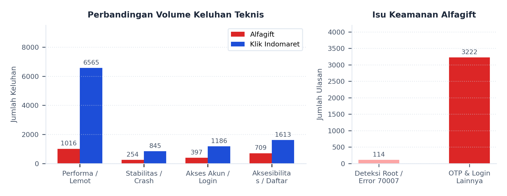
2. Digital service: respons CS di Play Store & Detil Kanal
Strategi respon layanan pelanggan (CS) dari kedua ritel menunjukkan perbedaan mendasar dalam penanganan keluhan publik.
Perbandingan Rasio & Kecepatan Respon
- Alfagift CS: Merespon hingga 73,04% ulasan negatif (10.111 ulasan dibalas), namun dengan median waktu tunda respon yang cukup lama (10,93 jam).
- Klik Indomaret CS: Hanya membalas 43,22% keluhan (6.798 ulasan dibalas), tetapi mencatat waktu respon sangat cepat dengan median 0,33 jam (20 menit).
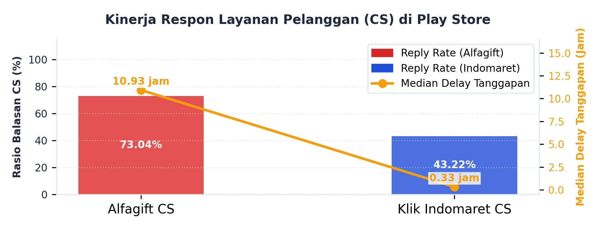
Alur Resolusi & Saluran Pengalihan
- Alfagift CS: Mengarahkan 45,17% keluhan ke asisten virtual 'Shalma' via DM Instagram resmi. CS menyertakan kode tiket unik (contoh: #3896583) langsung pada balasan untuk mempermudah pelacakan tanpa pengulangan informasi.
- Klik Indomaret CS: Mengarahkan 95,03% keluhan secara generik ke saluran telepon resmi (021-1500-280) atau email (customercare@klikindomaret.com) tanpa disertai nomor tiket pelacakan.
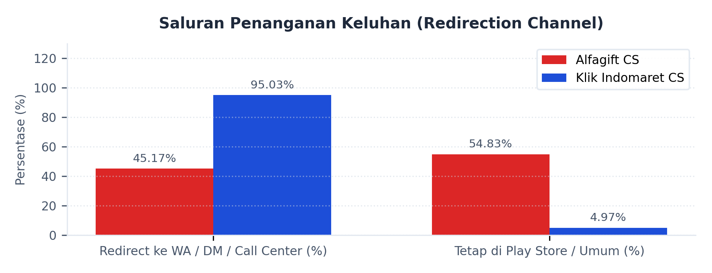
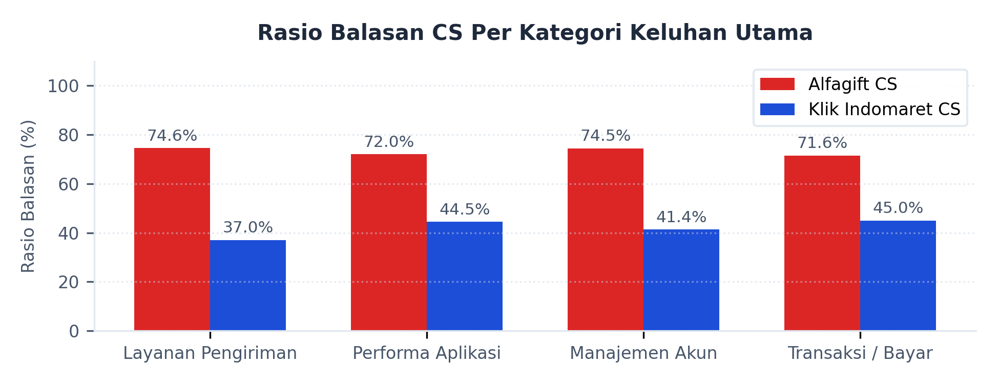
2. Digital service: APK, anomali & ringkasan
Versi APK dengan Keluhan Tertinggi
- Alfagift: Keluhan terpusat pada versi 4.37.0 (652 ulasan), 4.27.1 (622 ulasan), dan 4.47.1 (569 ulasan).
- Klik Indomaret: Ulasan negatif menumpuk pada rilis versi 2512100 (1.240 ulasan) dan 2501210 (674 ulasan).
Analisis Spike / Anomali Lini Masa
- Alfagift: Lonjakan keluhan pada April-Mei terkait pendaftaran event 'Alfamart Run' akibat server lumpuh saat war tiket: 'Aplikasi lemot daftar alfamart Run aja, kaga jelas sistem nya jelek'.
- Klik Indomaret: Spike ekstrem pada Februari 2026 (2.633 keluhan) terkait rilis versi baru, serta kelumpuhan berkala saat event Harbolnas (9.9, 12.12): 'Saat event harbolnas selalu macet nih aplikasi'.
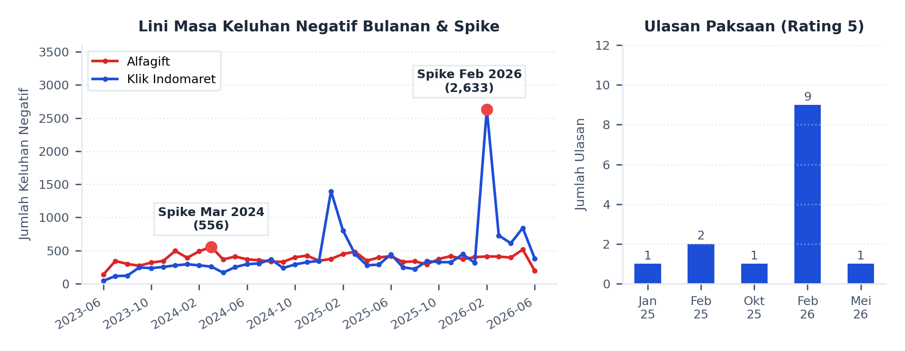
Berdasarkan salah satu ulasan pengguna, terdapat rating bintang 5 yang isi teksnya justru berisi keluhan teknis dan menyebut adanya instruksi dari atasan agar karyawan memberikan rating tinggi. Ulasan tersebut menuliskan bahwa rating bintang 5 diberikan bukan karena kepuasan, melainkan karena tekanan internal, dan mengkritik praktik tersebut sebagai bentuk manipulasi ulasan.
Ringkasan Komparatif
Alfagift unggul secara volume dan kepuasan umum (rating 4,37) dengan CS yang responsif (rasio balasan 73,04%) namun lambat tanggap (delay 10,93 jam). Sebaliknya, Klik Indomaret (rating 3,37) menghadapi kendala stabilitas aplikasi yang tinggi, dengan CS berasio rendah (43,22%) namun sangat cepat membalas (delay 20 menit) menggunakan pengalihan komunikasi generik ke saluran privasi eksternal.